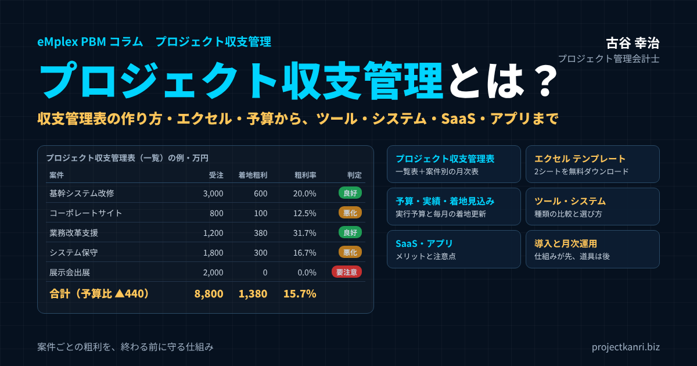

プロジェクト収支管理とは？プロジェクト収支管理表の作り方とエクセルテンプレート、予算の立て方から、ツール・システム・SaaS・アプリの選び方まで

結論：プロジェクト収支管理は「案件ごとの粗利を、終わる前に守る」ための仕組みです
この記事の要点
- プロジェクト収支管理とは：案件ごとの売上・原価・粗利を、予算・実績・着地見込みで管理すること
- 予算：受注後に実行予算を立て、労務費は工数×単価で積み上げる
- プロジェクト収支管理表：全案件の一覧表＋案件別の月次表。エクセルテンプレートを無料ダウンロード
- ツール・システム・SaaS・アプリ：労務費の自動計上、着地見込み、会計連携、入力のしやすさで選ぶ
- 順番：管理の仕組みを先に設計し、道具は後で選ぶ
プロジェクト管理会計士の古谷です。今回は、このコラムのカテゴリの名前でもある「プロジェクト収支管理」を、正面から取り上げます。
システム開発、Web制作、コンサルティング、建設、広告、イベント、映像制作。プロジェクト型のビジネスでは、売上も原価も案件ごとに発生します。ところが、多くの会社では、会社全体の損益は毎月把握していても、案件ごとの収支は、案件が終わってからでないと分からない、あるいは終わっても分からない、という状態にあります。
私はこれまで200社を超えるプロジェクト型の会社の経営管理を支援してきましたが、利益を安定して出している会社には共通点があります。それは、案件ごとの売上と原価を、予算・実績・着地見込みの三つの数字で毎月捉え、粗利が崩れそうな案件に、終わる前に手を打っていることです。
結論から申し上げます。プロジェクト収支管理とは、案件ごとの粗利を、終わる前に守るための仕組みです。そのためには、予算を立て、実績を正しく集め、着地見込みを毎月更新し、それを一覧で見られるプロジェクト収支管理表が必要です。最初はエクセルで始めて構いません。案件の数が増えてきたら、ツールやシステム、SaaSへの移行を検討します。
本稿では、プロジェクト収支管理とは何かという基本から、収支の構成要素、予算の立て方、実績の集め方、着地見込み、プロジェクト収支管理表の作り方とエクセルのテンプレート、そしてツール・システム・SaaS・アプリの種類と選び方までを、順を追ってお伝えします。
プロジェクト収支管理とは：案件ごとに売上と原価を管理し、粗利を把握すること
プロジェクト収支管理とは、プロジェクト、つまり案件ごとに、売上と原価を管理し、その差である粗利、あるいは利益を把握する管理のことです。案件別採算管理、プロジェクト損益管理、案件収支管理などと呼ばれることもあります。
会社の決算で作る損益計算書は、会社全体の売上と費用をまとめたものです。そこからは、会社全体が儲かっているかどうかは分かりますが、どの案件が儲かっていて、どの案件が損をしているのかは分かりません。プロジェクト収支管理は、この会社全体の数字を、案件という単位に分解して見るための管理です。
| 観点 | 会社全体の損益（財務会計） | プロジェクト収支管理（管理会計） |
|---|---|---|
| 単位 | 会社全体（期間） | 案件ごと（プロジェクトの期間） |
| 目的 | 外部への報告 | 社内の経営判断、粗利を守る |
| 見る数字 | 実績 | 予算・実績・着地見込み |
| 形式 | 会計基準で決まる | 自社で自由に設計できる |
| 分かること | 会社が儲かったか | どの案件で儲け、どこで損をしているか |
プロジェクト収支管理で扱う数字は、大きく三つあります。受注時に立てる計画の数字である予算、実際に発生した数字である実績、そして実績にこれからの見込みを加えた着地見込みです。この三つを案件ごとに並べ、予算どおりに進んでいるか、このままいくとどこに着地するかを確かめるのが、プロジェクト収支管理の基本です。
プロジェクト収支管理は、財務会計とは目的が異なります。財務会計が、株主や税務署、金融機関などの外部に向けて会社の業績を報告するためのものであるのに対し、プロジェクト収支管理は、社内の経営判断のための管理会計の一つです。決まった形式はなく、会社の事業や組織に合わせて、自由に設計することができます。
プロジェクト収支管理は、プロジェクト管理会計の中核をなす取り組みです。プロジェクト管理会計とは、プロジェクトを単位として、予算、原価、収益、着地見込みを管理し、経営の意思決定に生かすための会計の考え方です。その中でも、案件ごとの収支を把握するプロジェクト収支管理は、最も基本的で、最も効果の大きい取り組みだと言えます。
なぜプロジェクト収支管理が必要なのか：管理しないと起きること
プロジェクト収支管理をしていない会社では、次のようなことが起きがちです。
| 起きること | 結果 |
|---|---|
| 赤字に気づくのが完了後 | 手を打てず、利益が大きく失われる |
| 儲かる案件と儲からない案件の区別がつかない | 価格の見直しや受注の方針を判断できない |
| 労務費が案件の原価に入っていない | 採算が実態より良く見える |
| 見積りの精度が上がらない | 同じ失敗の見積りが繰り返される |
| 人の稼働の偏りが見えない | 特定の人に負荷が集中する |
なかでも深刻なのが、赤字に気づくのが遅れることです。プロジェクト型のビジネスでは、一件の大型案件が赤字になるだけで、その期の利益の大半が失われることもあります。案件ごとの収支が毎月見えていれば、原価が予算を超えそうな兆候に早く気づき、顧客との交渉、体制の見直し、範囲の調整といった手を打つことができます。
もう一つは、儲かる案件と儲からない案件の区別がつかないことです。売上の大きな顧客や案件が、実は粗利の小さい案件だった、ということは珍しくありません。案件の種類別、顧客別の粗利が見えていなければ、どの仕事を増やし、どの仕事の価格を見直すべきかという経営の判断ができません。
私自身、新卒で入った建設会社で、会社が経営の危機に陥る過程を内側から経験しました。工事の受注は取れていたのに、工事ごとの採算が見えていなかった。この経験が、私がプロジェクト収支管理を仕事の中心に据えるようになった原点です。
プロジェクト収支の構成要素：売上・原価・粗利の計算
プロジェクト収支管理で扱う数字の構成を整理しておきます。
| 項目 | 内容 | 計算・集め方 |
|---|---|---|
| 売上 | 契約金額・受注金額（追加・変更契約を含む） | 契約・検収にもとづき計上 |
| 労務費 | 社員がその案件に使った時間のコスト | 工数（時間）×時間単価（原価） |
| 外注費 | 協力会社・フリーランスへの支払 | 発注書・検収書・請求書で計上 |
| 経費 | 交通費・ライセンス・機材など案件の直接費 | 精算時にプロジェクトコードを入力 |
| （材料費） | 建設業などの材料 | 発注・納品にもとづき計上 |
| 粗利 | 売上−原価（労務費＋外注費＋経費） | 粗利率＝粗利÷売上 |
売上は、その案件の契約金額、あるいは受注金額です。追加の契約や変更の契約があれば、それも含めます。
原価は、その案件のために直接かかった費用で、主に労務費、外注費、経費の三つに分かれます。建設業では、材料費を加えた四つに分けるのが一般的です。
労務費は、社員がその案件に使った時間に、時間あたりの原価の単価を掛けて計算します。プロジェクト型のビジネスでは、労務費が原価の大きな部分を占めることが多く、ここを正しく把握できるかどうかが、プロジェクト収支管理の精度を大きく左右します。労務費を原価に入れずに外注費と経費だけで収支を見ている会社では、案件の採算が実態より良く見えてしまいます。
外注費は、協力会社やフリーランスに支払う費用です。経費は、その案件のために直接かかった交通費、ライセンス費、機材費などです。
売上から原価を引いたものが、粗利です。粗利を売上で割ったものが、粗利率です。プロジェクト収支管理では、この粗利と粗利率を、予算・実績・着地見込みのそれぞれで見ていきます。
なお、販売費及び一般管理費などの間接費を、案件に配賦して営業利益まで見る会社もあります。配賦をするかどうかは、目的によって判断します。まずは粗利までを正しく見ることを優先し、配賦は必要に応じて検討するのが現実的です。
労務費の時間単価の決め方：プロジェクト収支の精度を左右する
プロジェクト収支管理で最も悩ましいのが、労務費の時間単価の決め方です。単価が実態より低ければ、すべての案件の採算が良く見えてしまい、高ければ悪く見えてしまいます。
| 要素 | 内容 |
|---|---|
| 年間人件費 | 給与＋賞与＋会社負担の社会保険料＋福利厚生費など |
| 年間のプロジェクト稼働可能時間 | 所定労働時間から、会議・教育・営業支援など非プロジェクト時間を差し引く |
| 時間単価 | 年間人件費÷年間のプロジェクト稼働可能時間 |
| 設定の単位 | 個人別／役職・等級別（標準単価）／全社一律 |
| 見直し | 少なくとも年1回、実際の人件費と比較 |
基本的な考え方は、年間の人件費を、年間にプロジェクトに使える時間で割ることです。人件費には、給与だけでなく、賞与、会社が負担する社会保険料、福利厚生費なども含めます。時間には、所定の労働時間ではなく、社内の会議や教育、営業の支援など、プロジェクトに直接使わない時間を差し引いた時間を使います。
単価の設定の方法には、個人ごとに決める方法、役職や等級ごとの平均で決める方法、全社で一律の単価を使う方法があります。個人の給与が分かってしまうことを避けるため、役職や等級ごとの標準の単価を使う会社が多いようです。どの方法でも、少なくとも年に一度は、実際の人件費と比べて見直してください。
なお、間接部門の人件費や事務所の家賃などの間接費を単価に含めるかどうかも、決めておく必要があります。粗利までを見るのであれば、単価には直接の人件費だけを含め、間接費は全社で別に管理する方法が分かりやすいでしょう。
プロジェクト収支管理の予算：受注時に「実行予算」を立てる
プロジェクト収支管理の出発点は、予算です。予算がなければ、実績が多いのか少ないのかを判断する物差しがありません。
プロジェクトの予算は、受注した後に、実際の作業の計画にもとづいて立てます。見積の段階の原価をそのまま予算にするのではなく、受注した金額、確定した作業の範囲、担当者、外注先をもとに、原価を積み上げ直します。これを実行予算と呼びます。
| 手順 | 内容 |
|---|---|
| 1. 範囲の確認 | 受注金額、作業範囲、納期、成果物を確認 |
| 2. 作業の分解 | 工程・作業ごとに分ける（実績を集められる粒度で） |
| 3. 労務費 | 作業ごとの工数×時間単価で積み上げ |
| 4. 外注費・経費 | 発注予定の金額と必要経費を見積もる |
| 5. 予定粗利の確認 | 基準の粗利率を満たすか確認 |
| 6. 承認 | 上長・経営の承認を得て正式な予算に |
予算を立てる際には、労務費を工数と単価で積み上げることが大切です。工程や作業ごとに必要な時間を見積もり、時間あたりの原価の単価を掛けます。単価は、給与だけでなく、賞与や社会保険料なども含めた人件費をもとに、会社として決めておきます。
予算を立てたら、予定の粗利率が会社の基準を満たしているかを確認し、上長や経営の承認を得ます。承認された予算が、そのプロジェクトの正式な目標になります。実行予算の書き方や、業種別のサンプルについては、実行予算のコラムで詳しく解説していますので、あわせてご覧ください。
実績の集め方：労務費・外注費・経費を案件に正しく紐づける
予算を立てたら、次は実績を集めます。プロジェクト収支管理の精度は、実績をどれだけ正しく、速く集められるかで決まります。
| 実績 | 元になるもの | ポイント |
|---|---|---|
| 労務費 | タイムシート（工数） | 入力・承認・締めの期日を決める |
| 外注費 | 発注書・検収書・請求書 | 3点を突き合わせて案件に計上 |
| 経費 | 経費精算 | 精算時にプロジェクトコードを必須に |
| 売上 | 契約・検収書・請求書 | 計上の根拠と計上月を管理 |
実績を正しく集めるための鍵は、すべての売上と原価に、プロジェクトのコードを付けることです。受注した時点でプロジェクトのコードを付番し、工数、外注費、経費、売上のすべてを、そのコードに紐づけて記録します。コードが付いていない費用は、どの案件のものか分からなくなり、収支の数字から漏れてしまいます。
労務費の実績は、タイムシートで集めます。社員が、どの案件にどれだけの時間を使ったかを毎日、あるいは毎週記録し、月末に締めて上長が承認します。タイムシートの入力が遅れたり、漏れたりすると、労務費の実績が正しく出ません。入力のルールと締めの期日を決め、守ってもらう仕組みが必要です。
外注費は、発注書、検収書、請求書を突き合わせて、案件ごとに計上します。経費は、精算の際にプロジェクトのコードを入力してもらいます。売上は、検収書などの売上の計上の根拠にもとづいて、案件ごとに計上します。
これらの実績を、毎月決まった日に締めて、案件ごとに集計します。締めの日程が守られなければ、収支の数字はいつまでも確定しません。月次の締めを仕組みとして回すことが、プロジェクト収支管理の土台です。
実績を集める際に意外と見落とされるのが、売上のない社内の作業の工数です。提案の準備、社内の研究開発、教育、営業の支援などにもコードを付けて工数を記録しておくと、社員の時間がどこに使われているのかが分かり、案件に使える時間、つまり稼働率の分析にもつながります。案件の工数だけを記録していると、記録されていない時間がどこに消えているのかが見えません。
着地見込み：「このままいくと、どこに着地するか」を毎月更新する
予算と実績を比べるだけでは、プロジェクト収支管理は十分ではありません。実績はあくまで過去の数字であり、これからどうなるかは教えてくれないからです。そこで必要になるのが、着地見込みです。
着地見込みとは、それまでの実績の原価に、残りの作業にかかる原価の見込みを加えた、完了時の原価の見込みのことです。受注金額から着地見込みの原価を引いたものが、着地見込みの粗利になります。
| 項目 | 計算式 |
|---|---|
| 着地原価（見込み） | 実績原価（累計）＋残作業の見込み |
| 着地粗利 | 受注金額−着地原価 |
| 着地粗利率 | 着地粗利÷受注金額 |
| 予算との差 | 着地粗利−予算粗利 |
| 原価消化率 | 実績原価÷着地原価（進捗率と比べる） |
着地見込みを見るときに役立つのが、原価の消化率と進捗率の比較です。原価の消化率は、実績の原価が着地見込みの原価のどれだけを占めているかで、進捗率は、作業がどれだけ進んでいるかです。原価の消化率が進捗率を大きく上回っている案件は、原価が予定よりも早いペースで使われており、超過の兆候があります。
着地見込みは、プロジェクトマネージャーが毎月、残りの作業を見直して更新します。前月から着地見込みが悪化した案件は、その理由と対策を経営会議で議論します。予算と実績だけでなく、着地見込みを毎月更新することで、プロジェクト収支管理は、過去の振り返りから、未来に手を打つ管理へと変わります。
プロジェクト収支管理の役割分担：誰が、何を担うか
プロジェクト収支管理は、一人の担当者だけで回せるものではありません。関わる人それぞれが自分の役割を果たして、初めて機能します。
| 担い手 | 主な役割 |
|---|---|
| プロジェクトマネージャー | 予算の作成、残作業の見込みの更新、悪化時の対策 |
| メンバー | タイムシートの期日どおりの正確な入力 |
| 営業 | 受注内容・条件の引き継ぎ、追加・変更契約の締結 |
| 経理 | 外注費・経費・売上の計上、会計との一致の確認 |
| スーパーアドミニストレーター | コード付番・予算書発行、実績の収集と締め、収支管理表の整備 |
| 経営者 | 悪化案件への対応、受注方針・価格・人材配置の判断 |
プロジェクトマネージャーは、自分の案件の予算を立て、残りの作業の見込みを毎月更新し、着地見込みが悪化した場合の対策を考えます。メンバーは、タイムシートを期日どおりに正確に入力します。営業は、受注の内容と条件を正確に引き継ぎ、追加や変更の契約を確実に結びます。
経理は、外注費や経費、売上を正しく計上し、会計の数字とプロジェクト収支の数字が一致していることを確かめます。そして、こうした実績のデータを案件ごとに集め、締めを管理し、プロジェクト収支管理表を整える中心的な役割を担うのが、私がスーパーアドミニストレーターと呼んでいる存在です。経営者は、プロジェクト収支管理表をもとに、悪化した案件への対応や、受注の方針、価格、人材の配置を判断します。
役割の分担を明確にしておかないと、「数字が出ないのは経理のせい」「入力しないのは現場のせい」といった押し付け合いが起きます。誰が、何を、いつまでにするのかを決め、全社に周知しておくことが大切です。
プロジェクト収支管理表の作り方：一覧表と案件別の表
プロジェクト収支管理の数字を見える形にまとめたものが、プロジェクト収支管理表です。私がお勧めしているのは、全案件を一覧で見る「プロジェクト収支一覧表」と、一つの案件を月別に詳しく見る「案件別収支表」の二つを組み合わせる形です。
| 表 | 主な利用者 | 主な項目 |
|---|---|---|
| プロジェクト収支一覧表 | 経営者・事業部長 | 受注金額、予算粗利、実績原価、着地粗利・粗利率、予算との差、判定 |
| 案件別収支表 | プロジェクトマネージャー | 工数・労務費・外注費・経費の月別の予算と実績、着地見込み |
プロジェクト収支一覧表は、経営者や事業部長が、全体の状況を一目で把握するための表です。案件ごとに、受注金額、予算の原価と粗利、実績の原価、残りの作業の見込み、着地見込みの原価と粗利、予算との差、原価の消化率と進捗率を一行に並べます。そして、着地見込みの粗利率が基準を下回る案件や、予算より粗利が悪化している案件に、判定の印を付けます。
| 案件 | 受注金額 | 予算粗利（率） | 実績原価 | 着地原価 | 着地粗利（率） | 予算との差 | 判定 |
|---|---|---|---|---|---|---|---|
| 基幹システム改修 | 3,000 | 600（20.0%） | 1,600 | 2,400 | 600（20.0%） | 0 | 良好 |
| コーポレートサイト | 800 | 200（25.0%） | 520 | 700 | 100（12.5%） | ▲100 | 悪化 |
| 業務改革支援 | 1,200 | 360（30.0%） | 300 | 820 | 380（31.7%） | ＋20 | 良好 |
| システム保守（年間） | 1,800 | 360（20.0%） | 900 | 1,500 | 300（16.7%） | ▲60 | 悪化 |
| 展示会出展 | 2,000 | 300（15.0%） | 1,750 | 2,000 | 0（0.0%） | ▲300 | 要注意 |
| 合計 | 8,800 | 1,820（20.7%） | 5,070 | 7,420 | 1,380（15.7%） | ▲440 |
エクセルテンプレートの「プロジェクト収支一覧」シートと同じ数字です。数値は説明のための例です。
上の例では、五つの案件の受注の合計は八千八百万円、予算の粗利は一千八百二十万円で、粗利率は二十・七％です。ところが、着地見込みでは粗利は一千三百八十万円、粗利率は十五・七％に下がり、予算より四百四十万円少なくなる見込みです。一覧で見ると、悪化の原因がWeb制作、保守運用、イベントの三つの案件にあり、特にイベントの案件は着地見込みの粗利がゼロで、最も注意が必要であることが分かります。
案件別収支表は、プロジェクトマネージャーが自分の案件を管理するための表です。工数、労務費、外注費、経費を、月ごとに予算と実績で並べ、どの費目が、いつ、予算からずれ始めたのかを確認できるようにします。
二つの表の数字は、必ず一致させてください。案件別収支表の実績の原価の累計と、一覧表の実績の原価が食い違っていると、どちらの数字を信じればよいか分からなくなります。同じ実績のデータから、両方の表を作ることが大切です。
一覧表には、案件の種類や担当の部門、顧客といった属性の列も加えておくと、後から案件の種類別や顧客別に集計しやすくなります。エクセルであれば、ピボットテーブルを使って、こうした集計を簡単に作ることができます。
経営会議でのプロジェクト収支管理表の使い方
プロジェクト収支管理表は、作るだけでは意味がありません。経営会議で、どのように使うかが大切です。
お勧めしているのは、全案件を一件ずつ説明するのではなく、例外を中心に議論する進め方です。まず、全体の受注、予算の粗利、着地見込みの粗利の合計を確認し、予算との差がどれだけあるかを把握します。次に、判定が「赤字」「要注意」「悪化」となっている案件だけを取り上げ、担当のプロジェクトマネージャーから、悪化の理由と対策を説明してもらいます。順調な案件は、一覧で確認するだけにとどめます。
こうすることで、会議の時間を、本当に手を打つべき案件に集中させることができます。数十件の案件を抱える会社でも、議論すべき案件は数件に絞られるはずです。
もう一つ大切なのは、前月からの変化を見ることです。今月初めて悪化した案件、先月から着地見込みが大きく動いた案件は、特に注意が必要です。プロジェクト収支管理表に、前月の着地見込みの粗利の欄を加えておくと、変化を一目で確認できます。
そして、決めた対策は、誰が、いつまでに実行するのかを記録し、翌月の会議で結果を確認します。この繰り返しが、プロジェクト収支管理を、数字を眺める会議から、利益を守る会議に変えていきます。
プロジェクト収支管理をエクセルで始める：テンプレートと数式
プロジェクト収支管理を始めるときは、エクセルで十分です。この記事では、そのまま使えるエクセルのテンプレートを用意しました。
📥 プロジェクト収支管理表テンプレート（エクセル）をダウンロード
「プロジェクト収支一覧」と「案件別収支表」の2シートで構成。黄色のセルに入力すると、粗利・粗利率・着地見込み・予算との差・判定が自動で計算されます。数値は説明のための例です。
一つ目の「プロジェクト収支一覧」のシートでは、案件ごとに、受注金額、予算の原価、実績の原価の累計、残りの作業の見込み、進捗率を入力します。予算の粗利と粗利率、着地見込みの原価と粗利と粗利率、予算との差、原価の消化率は、数式で自動的に計算されます。判定の欄には、着地見込みの粗利がマイナスなら「赤字」、粗利率がアラートの基準を下回れば「要注意」、予算より粗利が減っていれば「悪化」と表示されます。
| 項目 | 数式の考え方 |
|---|---|
| 予算粗利 | ＝受注金額−予算原価 |
| 着地原価 | ＝実績原価＋残作業の見込み |
| 着地粗利率 | ＝IF(受注金額=0,"",着地粗利÷受注金額) |
| 予算との差 | ＝着地粗利−予算粗利 |
| 判定 | ＝IF(着地粗利<0,"赤字",IF(着地粗利率<基準,"要注意",IF(予算との差<0,"悪化","良好"))) |
| 労務費（案件別） | ＝工数×時間単価 |
二つ目の「案件別収支表」のシートでは、工数、外注費、経費を月ごとに予算と実績で入力します。労務費は、工数に時間あたりの単価を掛けて自動で計算され、原価の合計と、着地見込みの粗利までが求められます。
エクセルでプロジェクト収支管理表を作るときのポイントは、入力するセルと計算するセルを分けること、すべての案件で同じ形式を使うこと、そして月に一度、決まった日に更新することです。難しい関数は必要ありません。足し算と引き算と割り算、そしてIF関数があれば、十分に機能するプロジェクト収支管理表が作れます。
テンプレートを使い始める際には、まず主要な案件の受注金額と予算の原価を入力し、月末に実績の原価と残りの作業の見込みを更新することから始めてみてください。一か月目は数字の精度が低くても構いません。二か月目、三か月目と続けるうちに、どの案件の見込みがずれやすいのか、どの費目の集計に手間がかかるのかが見えてきます。
エクセルによるプロジェクト収支管理の限界
エクセルは手軽で柔軟ですが、案件の数や関わる人が増えてくると、限界が見えてきます。
| 限界 | 起きること |
|---|---|
| 実績の集計・転記の手間 | 数字が出るのが遅れ、手を打つ時期を逃す |
| ミス | 転記の誤り、数式の破損、古いファイルの使用 |
| 属人化 | 作った人しか分からず、異動・退職で止まる |
| リアルタイム性 | 最新の数字を全員が同じように見られない |
| 統制 | 誰がいつ数字を変えたか追えない（上場準備・内部統制の課題） |
最も大きな限界は、実績を集める手間です。タイムシート、外注費、経費、売上の実績は、それぞれ別のシステムや書類にあります。それを毎月、案件ごとに集計してエクセルに転記する作業は、案件の数に比例して増えていきます。集計に時間がかかれば、数字が出るのが遅れ、手を打つ時期を逃します。
次に、ミスと属人化です。転記の誤り、数式の壊れ、古いファイルの使用。こうしたミスは、エクセルでは避けにくいものです。また、複雑なエクセルのファイルは、作った人にしか分からなくなりがちで、その人が異動や退職でいなくなると、管理が止まってしまいます。
そして、リアルタイム性と統制です。エクセルの数字は、更新した時点の数字にすぎず、最新の状況を誰もが同じように見ることは難しくなります。誰がいつ数字を変えたのかを追うことも困難で、上場準備や内部統制の観点からも課題が残ります。
目安として、同時に動いている案件が数十件を超える、タイムシートを入力する社員が数十名を超える、月次の集計に数日以上かかる、といった状況になれば、ツールやシステムへの移行を検討する時期だと考えてください。
エクセルからシステムへの移行で失敗しないために
エクセルからプロジェクト収支管理のシステムやSaaSに移行する際には、いくつかの注意点があります。
一つ目は、エクセルの形をそのまま再現しようとしないことです。長年使ってきたエクセルには、会社独自の工夫が詰まっていますが、その中には、手作業を前提にした項目や、今では使われていない項目も含まれています。移行は、管理の仕組みを見直す良い機会です。本当に必要な項目は何かを整理したうえで、システムの標準の形に合わせられるところは合わせる方が、運用は楽になります。
二つ目は、いきなり全社で切り替えないことです。まずは一つの部門や、一部の案件から始め、入力のルールや締めの運用を確かめてから、全社に広げます。並行して運用する期間を設け、エクセルの数字とシステムの数字が一致することを確かめると安心です。
三つ目は、現場への説明と教育です。特に、タイムシートを入力する社員に、なぜ入力が必要なのか、入力した数字がどのように使われるのかを伝えることが大切です。目的が分からないまま入力を求められると、入力は形だけのものになり、数字の精度が上がりません。
四つ目は、マスタの整備です。プロジェクトのコード、顧客、社員、単価、費目といったマスタの情報を、移行の前に整理しておきます。マスタが乱れたまま移行すると、システムの中でも数字が正しく集まりません。
プロジェクト収支管理ツール・システムの種類と比較
プロジェクト収支管理に使える道具には、いくつかの種類があります。それぞれの特徴を比較します。
| 種類 | 強み | 弱み・注意点 | 向いている会社 |
|---|---|---|---|
| エクセル・スプレッドシート | 手軽、自由に設計できる、費用が小さい | 集計の手間、ミス、属人化 | 案件数が少ない会社、まず始めたい会社 |
| 会計ソフトの部門別・プロジェクト別機能 | 会計の数字と一致させやすい | 工数・着地見込みの管理が苦手なことが多い | 外注費・経費中心で工数管理が軽い会社 |
| プロジェクト管理ツール | タスク・スケジュール管理に強い | 原価・粗利の管理は限定的 | 進捗管理を主目的とする会社 |
| プロジェクト収支管理システム・SaaS | 予算・工数・原価・着地見込み・粗利を一元管理 | 月額費用、業務への適合の確認が必要 | 案件数・社員数が増えてきた会社 |
| ERP | 販売・購買・会計・人事を統合 | 導入の費用と期間が大きい | 大規模な会社 |
エクセルやスプレッドシートは、手軽に始められ、自由に設計できるのが強みです。案件の数が少ないうちは、最も現実的な選択肢です。
会計ソフトの部門別やプロジェクト別の機能を使う方法もあります。会計の数字と一致させやすい一方で、工数の管理や着地見込みの管理は苦手なことが多く、予算と実績の比較にとどまりがちです。
プロジェクト管理のツールは、タスクやスケジュールの管理に強みがありますが、原価や粗利の管理の機能は限られていることが一般的です。
プロジェクト収支管理に特化したシステムやSaaSは、予算、工数、原価、着地見込み、粗利を、案件ごとに一つの基盤で管理できるのが特徴です。タイムシートや経費の精算、外注の支払と連携し、実績が自動で案件に集まる仕組みを持つものもあります。
ERPは、販売、購買、会計、人事などを統合した大規模なシステムで、プロジェクト管理の機能を持つものもあります。機能は豊富ですが、導入の費用と期間が大きくなる傾向があります。
どれが正解ということはありません。会社の規模、案件の数、管理したい項目、予算に応じて選びます。ただし、どの道具を選ぶにしても、プロジェクトのコード、予算、実績、着地見込みという管理の考え方は共通です。道具を選ぶ前に、自社の管理の仕組みを設計しておくことが大切です。
なお、「プロジェクト収支管理システム」「プロジェクト収支管理ツール」「プロジェクト収支管理SaaS」「プロジェクト収支管理アプリ」といった言葉は、厳密に使い分けられているわけではありません。クラウドで提供されるプロジェクト収支管理のシステムがSaaSであり、それをスマートフォンなどから使う入口がアプリ、と考えると分かりやすいでしょう。大切なのは名前ではなく、自社の管理に必要な機能を備えているかどうかです。
プロジェクト収支管理のSaaS・クラウド・アプリのメリットと注意点
近年は、プロジェクト収支管理の機能をクラウドで提供するSaaSが増えています。SaaSとは、ソフトウェアを自社のサーバーにインストールするのではなく、インターネットを通じてサービスとして利用する形態のことです。スマートフォンやタブレットのアプリ、あるいはブラウザから利用できるものも多くあります。
| メリット | 注意点 |
|---|---|
| 導入が速く、初期費用を抑えられる | 月額の利用料が継続してかかる |
| 機能が継続的に更新される | 細かな作り込みには限界がある |
| スマートフォン・ブラウザで現場から入力・承認できる | データの保管場所・セキュリティ体制の確認が必要 |
| 経営者がどこでも最新の収支を確認できる | 将来の移行に備え、データを取り出せるか確認する |
SaaSの最大のメリットは、導入が速く、初期の費用を抑えられることです。自社でサーバーを用意する必要がなく、契約すればすぐに使い始められます。機能も継続的に更新され、法令の改正などにも提供する側が対応します。
また、場所を選ばずに使えることも大きなメリットです。現場や外出先から、スマートフォンのアプリやブラウザでタイムシートを入力したり、経費を申請したり、上長が承認したりできれば、実績の入力の遅れが減り、数字が早く集まるようになります。経営者は、どこにいても、最新のプロジェクトの収支を確認できます。
一方で、注意点もあります。月額の利用料が継続的にかかること、自社の業務に合わせた細かな作り込みには限界があること、データの保管場所やセキュリティの体制を確認する必要があること、そして将来、別のサービスに移る際にデータを取り出せるかどうかです。
アプリの使いやすさも重要です。どれほど機能が豊富でも、現場の社員が入力しにくければ、タイムシートは入力されず、実績は集まりません。導入を検討する際には、管理者の画面だけでなく、現場の社員が毎日使う入力の画面を、実際に試してもらうことをお勧めします。
SaaSを選ぶ際には、試用の期間を活用し、実際の自社の案件のデータを少し入れて、一か月分の締めと集計を試してみることをお勧めします。カタログや説明会で見る画面と、自社の業務で使ったときの使い勝手は、思った以上に違うものです。
プロジェクト収支管理システムの選び方：チェックリスト
プロジェクト収支管理のシステムやSaaSを選ぶ際に、確認したい項目をチェックリストにまとめます。
| 観点 | 確認すること |
|---|---|
| 予算 | 案件ごとに売上・労務費・外注費・経費の予算を立てられるか、業種に合うか |
| 労務費 | タイムシートの工数が承認を経て、単価を掛けて労務費として案件に計上されるか |
| 実績の集約 | 外注費・経費・売上が案件に自動で集まるか |
| 着地見込み | 残作業の見込みから着地粗利を計算し、悪化を知らせる機能があるか |
| 一覧と分析 | 全案件の一覧、案件種別・顧客別・部門別の集計ができるか |
| 会計連携 | 会計ソフトへの仕訳データ連携の方法 |
| 使いやすさ | 現場がスマートフォン・ブラウザで入力しやすいか |
| 統制 | 権限管理、承認の記録、操作のログ |
| 費用と支援 | 初期・月額の費用、導入支援の内容 |
なかでも重視していただきたいのは、労務費の扱いと、着地見込みの機能です。プロジェクト型のビジネスでは、労務費が原価の中心です。タイムシートの工数が、単価を掛けて自動で労務費として案件に計上される仕組みがあるかどうかは、プロジェクト収支管理の精度と手間を大きく左右します。
着地見込みの機能も重要です。予算と実績の比較だけでなく、残りの作業の見込みを入力し、着地見込みの粗利を自動で計算し、悪化した案件を知らせてくれる機能があれば、手を打つのが早くなります。
そして、会計との連携です。プロジェクト収支管理の数字と、会計の数字が一致していなければ、経理と現場の間で、どちらの数字が正しいのかという議論が繰り返されます。会計ソフトへの仕訳のデータの連携の方法を確認しておきます。
プロジェクト収支管理システムの費用対効果の考え方
システムやSaaSの導入を検討する際、多くの方が気にされるのが費用です。月額の利用料が、エクセルに比べて高く感じられることもあるでしょう。
費用対効果を考える際には、二つの効果を見積もってみてください。一つ目は、集計の手間の削減です。毎月、実績を集めて転記し、プロジェクト収支管理表を作るのに、誰が、何時間をかけているか。その時間に人件費の単価を掛けると、エクセルでの管理にも、目に見えない費用がかかっていることが分かります。
二つ目は、赤字の早期発見による効果です。赤字の兆候に一か月早く気づけば、対策の選択肢が増え、損失を小さくできます。大型の案件の赤字を一件でも小さくできれば、システムの年間の費用を上回る効果が出ることも珍しくありません。
もちろん、効果はシステムを入れただけでは生まれません。管理の仕組みを設計し、運用を定着させてこそです。費用だけでなく、導入の支援や、運用の定着までの伴走の体制も、比較の材料にしてください。
プロジェクト収支管理の導入ステップ
プロジェクト収支管理を新たに始める、あるいはエクセルからシステムに移行する際の手順を整理します。
| ステップ | 内容 |
|---|---|
| 1. 単位とコード | 管理するプロジェクトの単位とコード体系を決める |
| 2. 単価と予算様式 | 労務費の時間単価、予算の費目と粒度を決める |
| 3. 実績の収集 | タイムシート・外注費・経費・売上の計上ルールと締めの日程 |
| 4. 表と会議 | 一覧表・案件別表の形式と、使う会議を決める |
| 5. 運用と改善 | 3か月運用して振り返り、ルールと様式を見直す |
ステップ1は、管理の単位とコードの体系を決めることです。どの単位を一つのプロジェクトとして管理するのか、コードをどのように付けるのかを決めます。
ステップ2は、原価の単価と予算の様式を決めることです。労務費の時間あたりの単価を決め、予算をどの費目で、どの粒度で立てるのかを決めます。
ステップ3は、実績を集める仕組みを整えることです。タイムシートの入力と承認のルール、外注費と経費にプロジェクトのコードを付けるルール、月次の締めの日程を決めます。
ステップ4は、プロジェクト収支管理表と、それを使う会議を決めることです。一覧表と案件別の表の形式を決め、毎月の経営会議やプロジェクトの会議で、どの数字を、誰が、どのように確認するのかを決めます。
ステップ5は、運用しながら改善することです。最初から完璧を目指す必要はありません。三か月ほど運用して、入力の負担、数字の精度、会議での使われ方を振り返り、ルールや様式を見直していきます。
システムやSaaSを導入する場合も、この順番は変わりません。ステップ1から4までの設計ができていないままシステムを入れても、システムは期待した効果を生みません。設計が先、道具は後、と考えてください。
プロジェクト収支管理の月次運用サイクル
プロジェクト収支管理は、毎月同じサイクルで回し続けることで力を発揮します。
| 時期 | やること |
|---|---|
| 月末〜第1営業日 | タイムシート・経費・外注請求の締め |
| 第2〜3営業日 | 実績の確定、会計との照合 |
| 第3〜4営業日 | PMが残作業の見込みを更新し、着地見込みを確定 |
| 第5営業日 | プロジェクト収支管理表の更新、悪化案件の抽出 |
| 経営会議 | 悪化案件の打ち手と、案件種別・顧客別の傾向を議論 |
このサイクルの中で最も大切なのは、経営会議での議論の仕方です。プロジェクト収支管理表を前に、「なぜ予算と違ったのか」だけを問うのではなく、「このままいくとどこに着地するのか」「着地を良くするために何ができるのか」を議論します。悪化した案件の報告を責めるのではなく、早く報告してくれたことを評価し、一緒に打ち手を考える。そうした会議の文化が、プロジェクト収支管理を生きた仕組みにします。
プロジェクト収支管理で見るべき指標
プロジェクト収支管理表から、経営として見るべき指標を整理しておきます。
| 指標 | 見るポイント |
|---|---|
| 着地粗利・着地粗利率 | 案件ごと、全体で基準を満たしているか |
| 予算との差 | 悪化している案件と金額 |
| 原価消化率と進捗率の差 | 原価超過の兆候 |
| 赤字・要注意案件の数と金額 | 件数と影響額の推移 |
| 案件種別・顧客別・部門別の粗利率 | 儲かる構造と儲からない構造 |
| 予算粗利率と完了時粗利率の差 | 見積り・予算の精度 |
一つひとつの案件の粗利率だけでなく、案件の種類別、顧客別、部門別に集計して見ることも大切です。どの種類の案件が儲かり、どの種類が儲からないのか。どの顧客との取引の採算が良く、どの顧客は悪いのか。こうした集計は、受注の方針や価格の見直し、人材の配置といった、経営の判断の材料になります。
また、予算の粗利率と、完了時の実績の粗利率の差も、継続して見ておきたい指標です。この差が大きい案件の種類は、見積りや予算の立て方に改善の余地があることを示しています。
粗利が出ていても現金が残らない：収支と資金繰りの関係
プロジェクト収支管理で粗利を把握できるようになっても、もう一つ気をつけたいのが、資金繰りとの関係です。案件の粗利が出ていても、会社に現金が残らないことがあります。
プロジェクト型のビジネスでは、社員の給与や外注費の支払が先に発生し、売上の入金は検収の後、さらに数か月後になることが珍しくありません。大型の案件ほど、支払と入金の間の期間が長くなり、その間の資金を会社が立て替えることになります。粗利の大きな案件を多く受注しても、入金の時期が遅ければ、手元の資金は減っていきます。
そのため、プロジェクト収支管理と合わせて、案件ごとの請求と入金の予定、外注費の支払の予定も管理しておくことをお勧めします。着手金や中間金の請求ができる契約にする、検収の時期を早める、売掛金の回収の状況を毎月確認する、といった対策は、資金繰りを大きく改善します。プロジェクトの採算と資金の関係については、別のコラムでも詳しく解説しています。
業種別に見るプロジェクト収支管理のポイント
プロジェクト収支管理の基本は共通ですが、業種によって、原価の中心や注意すべき点は異なります。
| 業種 | 原価の中心 | 管理のポイント |
|---|---|---|
| システム開発・SI | 労務費（工数） | タイムシートの精度、工程別の工数の予実 |
| Web制作・デザイン | 労務費・外注費 | 修正回数による工数超過、ディレクション工数 |
| コンサルティング | 役職別の労務費 | スコープの拡大、上位役職の工数 |
| 建設業 | 外注費・材料費 | 発注管理、設計変更と追加請求 |
| 広告・イベント・映像制作 | 外注費・手配費 | 直前の追加手配、自社人件費の計上 |
| 保守運用・ITサービス | 運用担当の労務費 | 月次の予実、範囲外作業の把握 |
自社の業種の特徴を踏まえて、どの費目を、どの粒度で管理するのかを決めることが大切です。たとえば、労務費が原価の中心となるシステム開発やコンサルティングでは、タイムシートの精度が何より重要です。外注費や材料費の比率が高い建設業やイベント制作では、発注の管理と、発注の金額を予算と照らし合わせる仕組みが要になります。
少人数の会社のプロジェクト収支管理：最小限から始める
社員が数名から数十名ほどの会社では、本格的なプロジェクト収支管理の仕組みを整えるのは負担が大きいと感じるかもしれません。しかし、少人数の会社ほど、一件の案件の赤字が経営に与える影響は大きくなります。最小限の形からでも、始めることをお勧めします。
最初の一歩は、主要な案件だけでも、受注金額と予算の原価を決め、月末に実績の原価と残りの作業の見込みを書き出すことです。労務費は、まずは簡易な方法、たとえば社員ごとにどの案件に何割の時間を使ったかを月末に記録する方法でも構いません。完璧な数字でなくても、案件ごとの粗利の大まかな姿が見えるだけで、経営の判断は変わります。
この記事のエクセルのテンプレートは、少人数の会社でもそのまま使えるように作っています。まずは一覧表に主要な案件を入力し、毎月一回、経営者自身が眺める習慣から始めてみてください。
プロジェクト収支管理でよくある失敗と対策
最後に、プロジェクト収支管理でよくある失敗と、その対策をまとめます。
| 失敗 | 起きること | 対策 |
|---|---|---|
| 労務費を原価に入れない | 採算が実態より良く見える | タイムシートの工数×単価で計上 |
| 予算を立てない、見積りのまま | 比較の物差しがない | 受注後に実行予算を立てて承認 |
| 実績と予算だけを見る | 赤字に気づくのが遅い | 着地見込みを毎月更新 |
| コードのない費用がある | 収支から漏れる | 全取引にプロジェクトコードを必須に |
| 数字が会計と合わない | 経理と現場が対立 | 同じ実績データから作り、毎月照合 |
| システムだけ先に入れる | 定着しない | 管理の仕組みを先に設計する |
これらの失敗の多くは、プロジェクト収支管理を、経理や管理部門だけの仕事にしてしまうことから生まれます。プロジェクト収支管理は、プロジェクトマネージャー、営業、経理、経営者が、同じ数字を見て、同じ言葉で話すための仕組みです。関わるすべての人が、その目的を理解し、自分の役割を果たすことで、初めて機能します。
プロジェクト収支管理を一つの基盤で回す
私たちが提供しているプロジェクト管理会計のクラウドサービス「eMplex PBM」は、プロジェクト型ビジネスのプロジェクト収支管理を、一つの基盤で回すために作ったSaaSです。
業種別のテンプレートで、売上、労務費、外注費、直接経費の予算をプロジェクトごとに立て、進捗率と粗利率を案件ごとに把握できます。タイムシートで入力した工数は、上長の承認を経て労務費の原価に連携され、支払依頼のワークフローや経費精算、入金の消込と売掛金の管理も同じ基盤で扱えます。フォーキャストレポートでは、プロジェクトごとの着地見込みと粗利率のアラートを一覧で確認でき、案件の種類別、取引先別、部署別に掘り下げることもできます。事業別・プロジェクト別の収支レポート、財務会計への仕訳のCSVの出力、承認の記録を残す監査ログも備えています。エクセルでのプロジェクト収支管理に限界を感じ始めた方は、選択肢の一つとしてご検討いただければ幸いです。
まとめ：プロジェクト収支管理は、エクセルから始めて仕組みに育てる
プロジェクト収支管理とは、案件ごとの売上と原価を、予算・実績・着地見込みで捉え、粗利を終わる前に守るための仕組みです。
その基本は、受注時に実行予算を立てること、すべての実績にプロジェクトのコードを付けて正しく集めること、労務費をタイムシートの工数と単価で原価に入れること、着地見込みを毎月更新すること、そしてそれらを一覧で見られるプロジェクト収支管理表にまとめ、経営会議で未来に向けた議論をすることです。
最初はエクセルで十分です。この記事のテンプレートを使って、まずは主要な案件から、一覧表と案件別の表を作ってみてください。案件の数が増え、集計の手間やミスが気になり始めたら、ツールやシステム、SaaSへの移行を検討します。そのときも、管理の仕組みを先に設計し、道具はその後に選ぶ。この順番を守ることで、プロジェクト収支管理は、会社の利益を守る確かな仕組みに育っていきます。
よくある質問（FAQ）
Q. プロジェクト収支管理とは何ですか？
A. プロジェクト（案件）ごとに売上と原価を管理し、粗利を把握する管理です。受注時に立てる予算、実際に発生した実績、実績に残作業の見込みを加えた着地見込みの三つの数字を案件ごとに比べ、粗利が崩れそうな案件に、完了前に手を打つことを目的とします。
Q. プロジェクト収支管理表には何を載せればよいですか？
A. 全案件を一覧で見る表には、受注金額、予算原価・予算粗利・予算粗利率、実績原価、残作業の見込み、着地原価・着地粗利・着地粗利率、予算との差、原価消化率と進捗率、判定を載せます。案件別の表では、工数・労務費・外注費・経費を月別に予算と実績で並べます。
Q. プロジェクト収支管理はエクセルでできますか？
A. できます。入力セルと計算セルを分け、全案件で同じ形式を使い、毎月決まった日に更新すれば、足し算・引き算・割り算とIF関数で十分に機能します。この記事で、一覧表と案件別収支表の2シート構成のテンプレートをダウンロードできます。案件数や入力者が増えたら、ツールやシステムへの移行を検討します。
Q. プロジェクト収支管理の予算はどう立てればよいですか？
A. 受注後に、確定した作業範囲・担当者・外注先をもとに原価を積み上げ直す実行予算として立てます。労務費は工程ごとの工数に時間単価を掛け、外注費は発注予定の金額、経費は必要な費用を見積もり、予定粗利率を確認して承認を得ます。
Q. プロジェクト収支管理のツール・システムにはどんな種類がありますか？
A. エクセル・スプレッドシート、会計ソフトの部門別・プロジェクト別機能、プロジェクト管理ツール、プロジェクト収支管理に特化したシステム・SaaS、ERPなどがあります。案件数、管理したい項目（工数・労務費・着地見込み・会計連携など）、予算に応じて選びます。
Q. プロジェクト収支管理のSaaS・アプリを選ぶポイントは？
A. タイムシートの工数が単価を掛けて労務費として自動で案件に計上されるか、着地見込みと粗利率のアラートがあるか、外注費・経費・売上の実績が案件に集まるか、会計との連携方法、現場がスマートフォンやブラウザで入力しやすいか、権限管理・承認記録・セキュリティ、データの取り出しやすさを確認します。